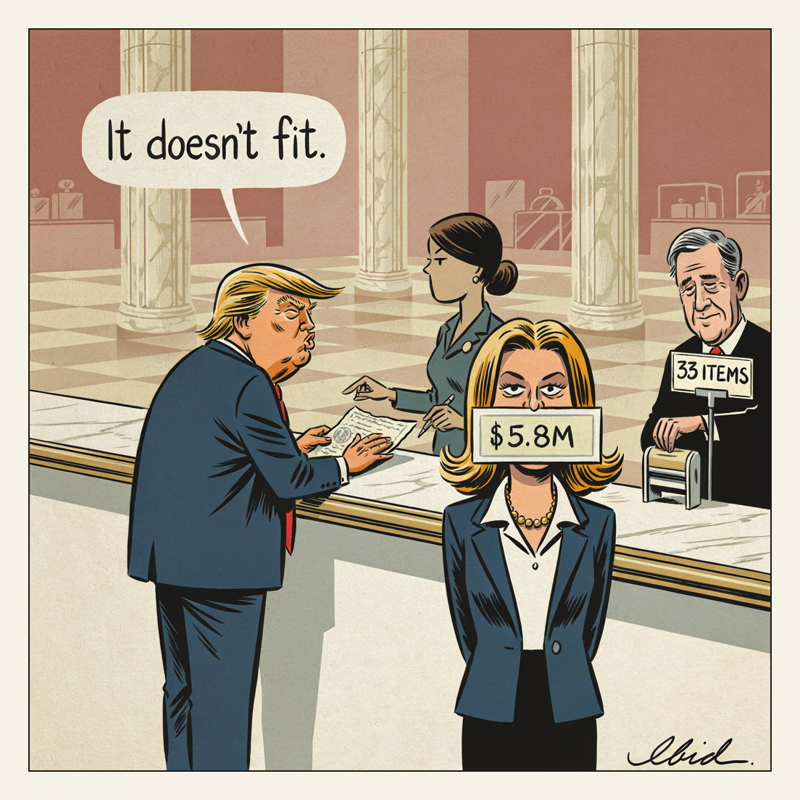

FINAL SALE.
Returns & Exchanges

The US Supreme Court has refused for a second time to revisit Trump's appeal of the 2023 civil verdict finding him liable for sexually abusing and defaming E Jean Carroll. The unexplained denial came on a routine August recess list of 33 requests; after the first denial in June, Carroll collected about $5.8m — the $5m judgement plus interest. A separate $83.3m defamation award from 2024 remains under appeal on presidential-immunity grounds.